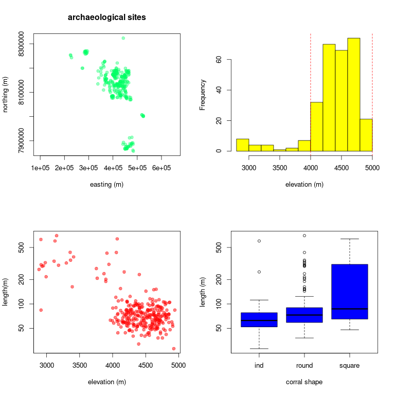
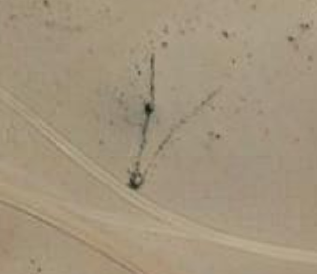

R is an open-source statistical computing language and perhaps the most widely used platform among researchers. This is quickly becoming the case for archaeologists too. Despite it's analytical power, R is also suprisingly simple and intuitive. At it's most basic level, it can serve as a simple calculator for addition, subtraction, multiplaction, and division. From there, the sky is the limit. R can be used to perform matrix algerbra, statistical analysis, simulation, mapping, visualization, Bayesian computation, and the list goes on. This tutorial will introduce you to a few foundational skills including basic calculation, data tables, summary statistics, and plotting. For example, you will learn how to quickly find the mean and standard deviation for a set of numerical values and visualize data trends using graphical plots. Here are some examples of the graphical visualizations that you will produce in this tutorial:

To complete this tutorial, you must install R on your computer. R is available for Windows, Mac, and Linux operating systems. Follow the installation instructions provided on the R website where you will click the CRAN link under the Download menu item. Select any link from the long list of download locations. I usually select the one that is geographically closest to me. It doesn't matter which you choose. Installation instructions will vary by operating system and version. This tutorial is based on R version 4.2.2 as implemented in linux Ubuntu 20.04 operating system. These system details may entail small–sometimes frustrating–differences for users working with Mac or Windows operating systems.
For Ubuntu users (Windows and Mac users, ignore), the standard R installation only runs in Terminal, which does not allow you to save your script. Although running R in Terminal can be useful for quick calculations, it's limited for more involved coding that requires editing over multiple sessions. To create a scripting component, you need to install packages called, emacs and ess. Emacs is simple text editing software that is commonly used in programming. ESS (emacs speaks statistics) is an add-on package for emacs that allows R and emacs to communicate. These can be easily installed via Terminal as follows:
sudo apt install emacs
sudo apt install essR. This may seem silly, but it is actually the fastest way to open the software once you get used to it. Whatever approach you take, the following screen will appear (or something like it depending on your operating system):
Now that you have an R console open, let's perform some basic calculations.
4+4. Be sure to enter the command by hitting the Enter key. You will see that R performs this basic calculation like any calculator.4+4*2/(3+6)-5. Again, you get the result for this basic arithmetic according to standard order of operations.3^5. R handles exponentiation (i.e., raising to a power) calculations easily with the carat symbol (^). The carat symbol is usually located at or near the number 6 on your keyboard.x to represent the number 4 as follows: x<-4x=4. In R computing language <- is the equal sign used when storing variables.x. You should see the number 4 returned in your console.x+25. You should see the number 29 returned in your console. In this simple way, R can perform simple algabreic calculations of virtually any complexity.R can also work with collections of numbers, called vectors.
y with 10 values as follows:
y<-c(4,6,2,3,6,7,8,2,1,3)c() portion of this line is a combine function that combines the entities entered between the parentheses. Each data point is separated by a comma. More information about functions will be presented below.y to verify that you've properly stored the vector. You should see the numbers returned on the screen.y+1. You will see that 1 has been added to all numbers.y. Notice that the numbers have returned to their original values. This is because you did not store your updated vector.y<-y+1. This says that y equals y + 1.y, and you will now see that all y values have been updated.z with 10 new numbers that you randomly choose.z to verify your vector.a<-y*za to verify the result. You should see 10 numbers that reflect the product of the x and y vectors.site that stores the letters A–K. When entering text data in R, the text should be in quotes to avoid confusion with variable names (e.g., we don't want R to confuse our site area variable, a with a site called "A"). You could accomplish this as follows: site<-c("A","B","C"...)site<-LETTERS[1:10]1:10 will return the numbers 1–10 in sequence. Try it without storing the number sequence. I.e., enter 1:20a[1], and the first area value will be returned.a[5]a[2:8]Functions are tools for quickly performing calculations on datasets. For example, we can use functions to calculate the average, minimum, or maximum value for a set of numbers. In R, functions are expressed as the function name followed by input data in parentheses. For example, the mean function is expressed as mean(x), which finds the mean for vector, x. R has thousands of functions for data analysis. We'll work through a few commonly used functions. You can find other functions as needed with simple web searches.
mean(a)min(a)a through the following commonly used functions: max, median, sd, and summary.?sd to open the help file for the sd function. A help file will appear. If you ever need information about a function, just open the function's help file by typing ? followed by the function name. You can close this help file in R Terminal by hitting the letter "q" (exiting the help file may vary by system. Consult Google as needed).hist(a)hist(a, xlab="site area (sq. m)")col="red". Tip: you can typically use your keyboard's up-arrow to recall a previous line of code so that you don't have to re-type code from scratch each time.y and z values using the boxplot function as follows: boxplot(y,z)plot. Scatterplots are used to evaluate relationships between two numerical variables. Use the plot function to see if there is a relationship between y and z as follows:
plot(y,z)col argument as described above; change the dots to triangles using the argument, pch=17; and double their size with the argument, cex=2.
cex=2 increases the size of the character by a factor of 2—the size is doubled. Your plot should look something like this now:
Although graphics windows are useful for visualizing your data on the computer, they are not well formatted for printing or publication. To export properly formatted graphics, you can use the png function. This function allows you to precisely control the size and resolution of your graphical output so that it is perfectly formatted for publication. The function assumes some knowlege of how computer graphics work. These details will not be discussed here, but they are addressed in the graphics tutorial using Gimp. See that tutorial for technical details toward understanding graphics.
png command into your console, customizing the path name to specify where you would like to store the image on your computer:
png("/home/username/SomeFolder/TutorialStatisticalProgramming/plot.png",width=4,height=4,units="in",res=300,pointsize=10)What this code says is, create an image file called "plot.png" at the specified location on your computer, and make that image 4 inches high x 4 inches wide at a resolution of 300 pixels per inch. 300 pixels per inch is a standard resolution for pubication. The "pointsize" argument sets the default text size to 10 pt, which is a common font size for publication graphics.
dev.off()Vectors are useful when dealing with few data points. As the number of data points or vectors increases, it becomes useful to use data frames. Data frames refer to data tables, which can be stored as variables in R just like vectors and individual quantities.
data.frame function as follows:
data.frame(site,length=y,width=z,area.m=a)df by preceding the last line of code with df<-.df to return your data frame. Now you have a nice data frame to work with. Let's see how to work with data frames.df[4,4]df[4,]df[,4]$ term to specify a column name within a data frame. For example, try df$lengthhist(df$length)Often we would like to import large datasets such as those that are created in spreadsheets. Although it is possible to import an number of data formats into R, the most widely used is the Comma Separated Value (csv) format. csv files are easily created using standard spreadsheet software such as LibreOffice Calc (see spreadsheet tutorial) or Microsoft Excel. In this section you will import a largdataset of archaeological sites. The sites will be explained in the final section of this tutorial. For now, just know that you are importing a dataset in which each line in the table represents an archaeological site, and each column represents some attribute associated with those sites.
data<-read.csv("/home/yourname/folders/TutorialStatisticalProgramming/chaccus.csv")data, to see your imported data table. Note that its a bit large an unwieldy.head(data)plot(x=easting,y=northing,asp=1)nrow(data)mean(data$length)emacs SomeFileName.R &x<-4.Ctrl+enter on your keyboard. The first time you do this, you will be prompted to start a directory. Just hit enter to accept the default. A console screen will appear with the code that you passed to it. Your emacs script and R console will look as follows:
x<-4.Windows + r or Apple + r on your keyboard.You will now bring all methods together to script an archaeological analysis using R code. You will evaluate a hypothesis for a series of archaeological features that were recently discovered in satellite imagery. These mysterious features are V-shaped stone walls that occur in the Andean highlands of South America. Here's an example of one of these archaeological features as seen in satellite imagery:

Archaeologists have documented hundreds of these. One hypothesis suposes that they served as animal trapping features used by Indigenous communities to cooperatively hunt large mammals, likely vicuña. This hypothesis anticipates that the traps are located in vicuña habitat, which occurs between 4000-5000 meters above sea level (masl). Your goal is to test this prediction—to determine if these features are located between 4000–5000 masl as the communal hunting hypothesis predicts. Follow the instructions below referring back to the methods above as needed. Your graphics will look something like this,
but feel free to add your own stylistic twists.
head function. Note that each line of the data frame represents a site.nrow function. How many sites are in the dataset?asp=1 term to make sure the x and y axes are equivalently scaled. Do you observe any patterning in the geographies of the sites?$ function as described in the data frame section of this tutorial. It's difficult to make any sense of so many values just by looking at them. We need a better way to visualize and summarize the data.hist function and generating summary statistics using the summary function. Note that the units are meters above sea level.abline function as follows:
abline(v=4000,col="red",lty=2)png function to export a png image called "ElevHist.png" that is 5 x 5 inches at 300 DPI and 10 pt font.plot function with elevation as the predictor variable (x axis) and length as the response variable (y axis). Does there appear to be any relationship?png function to export a png image called "ElevLength.png" that is 5 x 5 inches at 300 DPI and 10 pt font.boxplot function to determine whether site length differs by "corral" shape. Your boxplot code will be a little different here compared to how you executed the code before. This time, you will express your continuous variable (elevation) as a function of the categorical variable as follows:
boxplot(sites$length~sites$corral.shape)log="y" term to your plot as follows:
boxplot(sites$length~sites$corral.shape,log="y")png function to export a png image called "ShapeLength.png" that is 5 x 5 inches at 300 DPI and 10 pt font.hist function and generating summary statistics using the summary function. Note that the units of the length variable are meters. What do you observe? Do these seem like reasonably sized features given the hypothesis?png function to export a png image called "LengthHist.png" that is 5 x 5 inches at 300 DPI and 10 pt font.